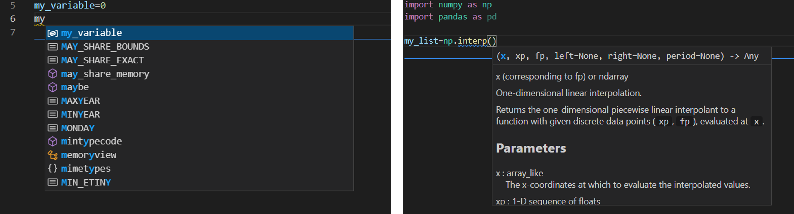

Introduction to Python
University of Stavanger
May 7, 2023
Table of contents
Defining a mathematical function
Passing arrays and lists to functions
There are plenty of online resources if you want get an overview of Python syntax, such as [1], for which the full book is available on github.
In this chapter I will try to focus on the key part of Python that you will need in this book, and maybe more importantly, give some advice on how to write good, reusable, Python code. As you might have discovered tasks can be solved in many different ways in Python. This is clearly a strength because you would most likely be able to solve any task thrown at you. On the other hand it is a weakness, because code can get messy and hard to follow, especially if you solve the same task in different parts of your code using different libraries or syntax.
In this chapter, I will explain how I tend to solve some common tasks, in the process we will also cover some stuff that you should know. If you need more information on each topic below, there are plenty of online sources.
The code examples are meant as an inspiration, and maybe you do not agree and have solutions that you think are much better. If that is the case, I would love to know, so that I can update this chapter.
Many people are concerned about speed or execution time. My advice is to focus on readable code, and get the job done. When the code is working, it is very easy to go back and change parts that are slow. Remember that you should test the code on big problems, sometimes the advantage of Numpy or Scipy is not seen before the system is large. You can use the magic commands %timeit to check performance of different functions. You can also use Numba, which translate python code into optimized machine code.
Personal guidelines
It is important to have some guidelines when coding, and for Python there are clear style guides called PEP 8. Take a look at the official guidelines, and make some specific rules for yourself, and stick to them. The reason for this is that if you make a large program or library, people will recognize your style and it is easier to understand the code. If you are working in a team, it is even more important - try to agree on some basic rules, for example:
Code Guidelines:
- Variable names should be meaningful.
- Naming of variables and functions. Should you write
def my_function(...):ordef MyFunction(..), i.e are words separated by an underscore or a capital letter? Personally I use capital letters for class definition, and underscore for function definitions. - (Almost) always use doc strings, you would be amazed how easy it is to forget what a function does. Shorter (private) functions usually do not need comments or doc strings, if you use good variable names - it should be easy to understand what is happening by just looking at the code.
- Inline comments should be used sparingly, only where strictly necessary.
- Strive to make code general, in particular not type specific, e.g. in Python it is easy to make functions that will work if a list (array) or a single value is passed.
- Use exception handling, in particular for larger projects.
- DRY - Do not Repeat Yourself [2]. If you need to change the code in more than one place to extend it, you may forget to change everywhere and introduce bugs.
- The DRY principle also applies to knowledge sharing, it is not only about copy and paste code, but knowledge should only be represented in one place.
- Import libraries using the syntax
import library as .., Numpy would typically beimport numpy as np. The syntaxfrom numpy import *could lead to conflicts between modules as functions could have the same name in two different modules.
Work Guidelines:
- Do not copy and paste code without understanding it. It is OK to be inspired by others, but be aware that in some cases code examples are unnecessary complicated. Too much copy and paste will result in a code with a mix of different styles.
- Stick to a limited number of libraries. I try to do as much as possible with Numpy, Pandas, and Matplotlib.
- Unexpected behavior of functions. Functions should be able to discover if something is wrong with arguments, and give warnings.
Code editor
You would like to use an editor that gives you some help. This is particularly useful when you do not remember a variable or function name, you can guess the name and a drop down list will appear which will let you pick the name or function you want. If you enter a function name, the editor will write some useful information about the function, some screenshots are shown in figure 1.
Figure 1: A screenshot of vscode (left) the editor helps to identify which variable name you want, (right) the editor shows relevant information about the function you would like to call.

Currently my favorite editor is vscode, it can be used for any language, and there are a lot of add ins that can be installed to make the coding experience more pleasant. Spyder is also a very good alternative, but this editor is mainly for Python. It takes some time to learn how an editor works, so it is good if the editor can be used for multiple purposes. However, always be open to new ideas and products, it will only make you more efficient. As an example, in some cases you will have a particular difficult error in the code, and then it could help to open and run that code in a different editor, you might get a slightly different error messages, which could help you locate the error.
Types in Python
In Python you do not need to define types as in a compiled language. In many ways one can say that Python only has one type. To not define types is generally an advantage as it lets you write code with fewer lines, and it is easier to write functions that will work with any kind of type. As an example, in the programming language C, if you want to write a function that lets you add two numbers, you have to write one version if the arguments are integers and one version if the arguments are floats.
The way that Python store and organize data is called a data model, and it is well described in the official documentation. The important point is that all data in Python is an object or a relation between objects. The is operator can be used to check if two objects have the same identity, that means they are the same object. The id operator gives an unique integer value for the object, and if two objects have the same id number they are the same object, e.g.
y=10
x=y
x is y # gives true
print(id(x))
print(id(y)) # prints the same integer as id(x)
For those familiar with C or C++, one would first have to define x and y as the type int and then they would already have a different place in memory and they can never be the same (even if they contain the same number). We will return to this point in more detail discussing lists and arrays in Python, as it can lead to unexpected behavior.
Another thing you might have experienced during Python coding is that you get error messages that refer to pieces of code that you have no knowledge of. This can happen when you pass the wrong type (e.g. a string instead of a number). Since Python only has one type, the wrong type will not be discovered before it is actually used. This error could be deep into some other library that you have no knowledge of.
Basic types
I will assume that you are familiar with the common types like floats (for real numbers), strings (text, lines, word, a character), integer (whole numbers), Boolean (True, False). What is sometimes useful is to be able to test what kind of type a variable is, this can be done with type()
my_float = 2.0
my_int = 3
my_bool = True
print(type(my_float))
print(type(my_int))
print(type(my_bool))
The output of the code above will be float, int, bool. If you want to test the type of a variable you can do
if isinstance(my_int,int):
print('My variable is integer')
else:
print('My variable is not integer')
Python also has build in support for complex numbers. An example are 1+2j, j is the imaginary part of the complex number. Note there is no multiplication sign between 2 and j.
Lists
Lists are extremely useful, and they have very nice syntax that in my opinion is more elegant than Numpy arrays. Whenever you want to do more than one thing with only a slight change between the elements, you should think of lists. Lists are defined using the square bracket [] symbol
my_list = [] # an empty list
my_list = []*10 # still an empty list ...
my_list = [0]*10 # a list with 10 zeros
my_list = ['one', 'two','three'] # a list of strings
my_list = ['one']*10 # a list with 10 equal string elements
To get the first element in a list, we do e.g. my_list[0]. In a list with 10 elements the last element would be my_list[9], the length of a list can be found by using the len() function, i.e. len(my_list)=10. Thus, the last element can also be found by doing my_list[len(my_list)-1]. However, in Python you can always get the last element by doing my_list[-1], the second last element would be my_list[-2] and so on.
Sometimes you do not want to initialize the list with everything equal, and it can be tiresome to write everything out yourself. If that is the case you can use list comprehension
my_list = [i for i in range(10)] # a list from 0,1,..,9
my_list = [i**3 for i in range(10)] # a list with elements 0,1,8, ..,729
We will cover the for loop below, but basically what is done is that the statement i in range(10), gives i the value 0, 1, \( \ldots \), 9 and the first i inside the list tells python to use that value as the element in the list. Using this syntax, there are plenty of opportunities to initialize. Maybe you want to pick from a list words that contain a particular subset of characters
my_list = ['hammer', 'nail','saw','lipstick','shirt']
new_list = [i for i in my_list if 'a' in i]
Now new_list=['hammer', 'nail', 'saw'].
List arithmetic
I showed you some examples above, where we used multiplication to create a list with equal copies of a single element, you can also join two lists by using addition
my_list = ['hammer','saw']
my_list2 = ['screw','nail','glue']
new_list = my_list + my_list2
Now new_list=['hammer', 'saw', 'screw', 'nail', 'glue'], we can also multiply the list with an integer and get a larger list with several copies of the original list.
List slicing
Clearly we can access elements in a list by using the index to the element, i.e. first element is my_list[0], and the last element is my_list[-1]. Python also has very nice syntax to pick out a subset of a list. The syntax is my_list[start:stop:step], the step makes it possible to skip elements
my_list=['hammer', 'saw', 'screw', 'nail', 'glue']
my_list[:] # ['hammer', 'saw', 'screw', 'nail', 'glue']
my_list[1:] # ['saw', 'screw', 'nail', 'glue']
my_list[:-1] # ['hammer', 'saw', 'screw', 'nail']
my_list[1:-1] # ['saw', 'screw', 'nail']
my_list[1:-1:2] # ['saw','nail']
my_list[::1] # ['hammer', 'saw', 'screw', 'nail', 'glue']
my_list[::2] # ['hammer', 'screw', 'glue']
Sometimes you have lists of lists, if you want to get e.g. the first element of each list you cannot access those elements using list slicing, you have to use a for loop or list comprehension
my_list = ['hammer','saw']
my_list2 = ['screw','nail','glue']
new_list=[my_list,my_list2]
# extract the first element of each list
new_list2 = [ list[0] for list in new_list]
new_list2=['hammer','screw']
Use lists if you have mixed types, and as storage containers. Be careful when you do numerical computation not to mix lists and Numpy arrays. Adding two lists e.g. [1,2]+[1,1], will give you [1,2,1,1], whereas adding two Numpy arrays will give you [2,3].
Numpy arrays
Numpy arrays are awesome, and they should be your preferred choice when doing numerical operations. We import Numpy as import numpy as np, some examples of initialization
my_array=np.array([0,1,2,3]) # initialized from list
my_array=np.zeros(10) # array with 10 elements equal to zero
my_array=np.ones(10) # array with 10 elements equal to one
A typical use of Numpy arrays is when you want to create equally spaced numbers to evaluate a function, this can be done in (at least) two ways
my_array=np.arange(0,1,0.2) # [0, 0.2, 0.4, 0.6, 0.8]
my_array=np.linspace(0,1,5) # [0., 0.25, 0.5, 0.75, 1.]
Note that in the second case, the edges of the domain (0,1) are included while in the first case the upper edge is not.
If a function is written to use Numpy arrays as arguments, make sure that it returns Numpy arrays. If you have to use a list inside the function to e.g. store the results of a calculation, convert the list to a Numpy array before returning it by np.array(my_list).
Array slicing
You can access elements in Numpy arrays in the same way as lists, the syntax is my_array[start,stop,step]
my_array=np.arange(0,6,1)
my_array[:] # [0,1,2,3,4,5]
my_array[1:] # [1,2,3,4,5]
my_array[:-1] # [0,1,2,3,4]
my_array[1:-1] # [1,2,3,4]
my_array[1:-1:2] # [1,3]
my_array[::2] # [0,2,4]
However, as opposed to lists all the basic mathematical operations addition, subtraction, multiplication are meaningful (if the arrays have equal length, or shape)
my_array = np.array([0,1,2]) my_array2 = np.array([3,4,5]) my_array+my_array2 # [3,5,7] my_array*my_array2 # [0,4,10] my_array/my_array2 # [0,.25,.4]
Note that these operations do what you would expect them to do. If you have arrays of arrays, you can easily access elements in the arrays
my_array = np.array([[0,1,2],[3,4,5]]) # shape 2x3 matrix my_array[0,:] # [0,1,2] First row my_array[1,:] # [3,4,5] Second row my_array[:,0] # [0,3] First column my_array[:,1] # [1,4] Second column
Not the extra [] in the definition of my_array. Numpy arrays have a shape property, which makes it very easy to create different matrices. The array [0,1,2,3,4,5] has shape (6,), but we can change the shape to create e.g. a \( 2\times3 \) matrix
my_array = np.array([0,1,2,3,4,5])
my_array.shape = (2,3) # [[0,1,2],[3,4,5]] 2 rows and 3 columns
my_array.shape = (3,2) # [[0,1],[2,3],[4,5]] 3 rows and 2 columns
Dictionaries
If you have not used dictionaries before they might feel unnecessary, but if you get used to them and their syntax, they can make your code much more flexible and easier to expand. You should use dictionaries, when you have data sets that you want to access fast. A very good mental image to have is an excel sheet where data are organized in columns. Each column has a header name, or a key. Assume we have the following table
| A | B | C |
| 1.0 | 2.0 | 3.0 |
| 4.0 | 5.0 | |
| 6.0 | 7.0 |
This could be represented as a dictionary as
my_dict={'A':[1.0,4.0,6.0],'B':[2.0,5.0,7.0],'C':[3.0]}
The syntax is {key1:values, key2:values2, ...}. We access the values in the dictionary by the key i.e. print(my_dict['A']) would print [1.0,4.0,6.0]. If you want to print out all the elements in a dictionary, you can use a for loop (see next section for more details about for loops)
for key in my_dict:
print(key, my_dict[key])
Looping
There are basically two ways of iterating through lists or to do a series of computations, using a for-loop or a while-loop. In most cases a for loop can also be written as a while loops and vice versa. You would typically use a for-loop when you are iterating over a fixed number of elements, very typical example is when we are iterating in a numerical computation from time zero to the end time. A while-loop is typically used when we do not know before the run time when to stop, this could be that we are waiting for user input or to reach a certain numerical accuracy in our calculation before proceeding.
For loops
A typical example of a for loop is to loop over a list and do something, and maybe during the execution store the results in a list
numbers=['one','two','three','one','two']
result=[] # has to be declared as empty
for number in numbers:
if number == 'one':
result.append(1)
The result of this code is result=[1, 1]. The number variable changes during the iteration, and takes the value of each element in the list. Note that I use numbers for the list and number as the iterator, this makes it quite easy to read and understand the code. In many cases you want to have the index, not only the element in the list
numbers = ['one','two','three','one','two']
numerics = [ 1 , 2 , 3 , 1 , 2 ]
result=[] # has to be declared as empty
for idx,number in enumerate(numbers):
if number == 'one':
result.append(numerics[idx])
The result of this code is result=[1, 1]. In this case the function enumerate(numbers) returns two values: the index, which is stored in idx, and the value of the list element, which is stored in number.
A more elegant way to achieve the same results without using the enumerate() function is to use zip
numbers = ['one','two','three','one','two']
numerics = [ 1 , 2 , 3 , 1 , 2 ]
result=[] # has to be declared as empty
for numeric,number in zip(numerics,numbers):
if number == 'one':
result.append(numeric)
The zip function can be used with several lists of same length.
In many cases you might be in a situation that you want to plot more than one function in a plot. It is then very tempting to copy and paste the previous code, but it is more elegant to use a for loop and lists
import numpy as np
import matplotlib.pyplot as plt
x_val = np.linspace(0,1,100) # 100 equal spaced points from 0 to 1
y_vals = [x_val,x_val*x_val]
labels = [r'x', r'$x^2$']
cols = ['r','g']
points = ['-*','-^']
for y_val,point,col,label in zip(y_vals,points,cols,labels):
plt.plot(x_val,y_val,point,c=col,label=label)
plt.grid()
plt.legend()
plt.show()
Output of code is shown in figure 2.
Figure 2: Output of code.

While loops
A while loop is used whenever you do not know before run time when to stop iterating. The syntax of the while loop is to do something while a condition is true
import numpy as np
finished = False
sum =0
while not finished:
sum += np.random.random() #returns a random number between 0,1
if sum >= 10.:
finished = True
In some cases we are iterating from \( t_0 \), \( t_1 \), etc. to a final time \( t_f \), if we use a fixed time step, \( \Delta t \), we can calculate the number of steps i.e \( N= \text{int} ((t_f-t_0)/\Delta t) \), and use a for loop. On the other hand, in a more fancy algorithms we can change the time step as the simulation proceeds and then we need to choose a while loop, e.g. while t0 <= tf:.
Functions in Python
When to use functions? There is no particular rule, but whenever you start to copy and paste code from one place to another, you should consider to use a function. Functions makes the code easier to read. It is not easy to identify which part of a program is a good candidate for a function, it requires skill and experience. Most likely you will end up changing the function definitions as your program develops.Short functions makes the code easier to read. Each function has a particular task, and it does only one thing. If functions do too many tasks there is a chance that you will have several functions doing some of the same operations. Whenever you want to extend the program, you may have to make changes several places in the code. The chance then is that you will forget to do the change in some of the functions and introduce a bug.
Defining a mathematical function
Throughout this course you will write many functions that do mathematical operations. In many cases, you would also pass a function to another function to make your code more modular. Lets say we want to calculate the derivative of \( \sin x \), using the most basic definition of a derivative \( f^\prime(x) = f(x+\Delta x)-f(x)/\Delta x \), we could do it as
def derivative_of_sine(x,delta_x):
''' returns the derivative of sin x '''
return (np.sin(x+delta_x)-np.sin(x))/delta_x
print('The derivative of sinx at x=0 is :', derivative_of_sine(0,1e-3))
We will discuss in a later chapter why \( \Delta x=10^{-3} \) is a reasonable choice. If we would like to calculate the derivative at multiple points, that is straightforward since we have used the Numpy version of \( \sin x \).
x=np.array([0,.5,1])
print('Derivative of sinx at x=0,0.5,1 is :', derivative_of_sine(x,1e-3))
The challenge with our implementation is that if we want to calculate the derivative of another function we have to implement the derivative rule again for that function. It is better to have a separate function that calculates the derivative
def f(x):
return np.sin(x)
def df(x,f,delta_x=1e-3):
''' returns the derivative of f '''
return (f(x+delta_x)-f(x))/delta_x
print('Derivative of sinx at x=0 is :', df(0,f))
Note also that we have put delta_x=1e-3 as a default argument. Default arguments have to come at the end of the argument lists, df(x,delta_x=1e-3,f) is not allowed. All of this looks well, but what you would experience is that your functions would not be as simple as \( \sin x \). In many cases your functions need additional arguments to be evaluated e.g.:
def s(t,s0,v0,a):
'''
t : time
s0 : initial starting point
v0 : initial velocity
a : acceleration
returns the distance traveled
'''
return s0+v0*t+a*t*t*0.5 #multiplication (0.5)is general faster
#than division (2)
How can we calculate the derivative of this function? If we try to do df(1,s) we will get the following message
TypeError: s() missing 3 required positional
arguments: 's0', 'v0', and 'a'
This happens because the df function expect that the function we send into the argument list has a call signature f(x). What many people do to avoid this error is to use global variable, that is to define s0, v0, and a at the top of the code. This is not always the best solution. Python has a special variable *args which can be used to pass multiple arguments to your function, thus if we rewrite df like this
def df(x,f,*args,delta_x=1e-3):
''' returns the derivative of f '''
return (f(x+delta_x,*args)-f(x,*args))/delta_x
we can do (assuming s0=0, v0=1, and a=9.8)
print('The derivative of sinx at x=0 is :', df(0,f))
print('The derivative of s(t) at t=1 is :', df(0,s,0,1,9.8))
Scope of variables
In small programs you would not care about scope, but once you have several functions, you will easily get into trouble if you do not consider the scope of a variable. By scope of a variable we mean where the variable is available, first some simple examples
A variable created inside a function is only available within the function: ``
def f(x):
a=10
b=20
return a*x+b
Doing print(a) outside the function will throw an error: name 'a' is not defined. What happens if we define variable a outside the function?
a=2
def f(x):
a=10
b=20
return a*x+b
If we first call the function f(0), and then do print(a) Python would give the answer 2, not 10. A local variable a is created inside f(x), that does not interfere with the variable a defined outside the function.
The global keyword can be used to pass and access variables in functions:
"
global a
a=2
def f(x):
global a
a=10
b=20
return a*x+b
In this case print(a) before calling f(x) will give the answer 2 and after calling f(x) will give 10.
Sometimes global variables can be very useful, and help you to make the code simpler. But make sure to use a naming convention for them, e.g. end all the global variables with an underscore. In the example above we would write global a_. A person reading the code would then know that all variables ending with an underscore are global, and can potentially be modified by several functions.
Passing arrays and lists to functions
In the previous section, we looked at some simple examples regarding the scope of variables, and what happened with that variable inside and outside a function. The examples used integer or floats. However in most applications you will pass an array or a list to a function, and then you need to be aware that the behavior is not always would you might expect.
Sometimes functions do not do what you expect, this might be because the function does not treat the arguments as you might think. The best advice is to make a very simple version of your function and test it for yourself. Is the behavior what you expect? Try to understand why or why not.
Let us look at some examples, and try to understand what is going on and why.
x=3
def f(x):
x = x*2
return x
print('x =',x)
print('f(x) returns ', f(x))
print('x is now ', x)
In the example above we can use x=3, x=[3], x=np.array([3]), and after execution x is unchanged (i.e. same value as before f(x)) was called. Based on what we have discussed before, this is maybe what you would expect, but if we now do
x=[3]
def append_to_list(x):
return x.append(1)
print('x = ',x)
print('append_to_list(x) returns ', append_to_list(x))
print('x is now ', x)
(Clearly this function will only work for lists, due to the append command.) After execution, we get the result
x = [3]
append_to_list(x) #returns [3 1], x is now [3, 1]
Even if this might be exactly what you wanted your function to do, why does x change here when it is a list and not in the previous case when it is a float? Before we explain this behavior let us rewrite the function to work with Numpy arrays
x=np.array([3])
def append_to_np(x):
return np.append(x,1)
print('x = ',x)
print('append_to_np(x) returns ', append_to_np(x))
print('x is now ', x)
The output of this code is
x = np.array([3])
append_to_np(x) #returns [3 1], x is now [3]
This time x was not changed, what is happening here? It is important to understand what is going on because it deals with how Python handles variables in the memory. If x contains million of values, it can slow down your program, if we do
N=1000000
x=[3]*N
%%timeit append_to_list(x)
x=np.array([3]*N)
%%timeit append_to_np(x)
On my computer I found that append_to_list used 76 nano seconds, and append_to_np
used 512 micro seconds, the Numpy function was about 6000 times slower! To add to the confusion consider the following functions
x=np.array([3])
def add_to_np(x):
x=x+3
return x
def add_to_np2(x):
x+=3
return x
print('x = ',x)
print('add_to_np(x) returns ', add_to_np(x))
print('x is now ', x)
print('x = ',x)
print('add_to_np2(x) returns ', add_to_np2(x))
print('x is now ', x)
The output is
x = np.array([3])
add_to_np(x) #returns [6], x is now [3]
x = np.array([3])
add_to_np2(x) #returns [6], x is now [6]
In both cases the function returns what you expect, but it has an unexpected (or at least a different) behavior regarding the variable x. What about speed?
N=10000000
x=np.array([3]*N)
%%timeit add_to_np(x)
x=np.array([3]*N)
%%timeit add_to_np2(x)
add_to_np is about twice as slow as add_to_np2. In the next section we will try to explain the difference in behavior.
The examples in this section are meant to show you that if you pass an array to a function, the array can be altered outside the scope of the function. If this is not what you want, it could lead to bugs that are hard to detect. Thus, if you experience unwanted behavior pick out the part of function involving list or array operations and test one by one in the editor.
Call by value or call by reference
For anyone that has programmed in C or C++ call by reference or value is something one need to think about constantly. When we pass a variable to a function there are two choices, should we pass a copy of the variable or should we pass information about where the variable is stored in memory?
In C and C++ pass by value means that we are making a copy in the memory of the variable we are sending to the function, and pass by reference means that we are sending the actual parameter or more specific the address to the memory location of the parameter. In Python all variables are passed by object reference.
In C and C++ you always tell in the function definition if the variables are passed by value or reference. Thus if you would like a change in a variable outside the function definition, you pass the variable by reference, otherwise by value. In Python we always pass by (object) reference.
Floats and integers
To gain a deeper understanding, we can use the id function, the id function gives the unique id to a variable. In C this would be the actual memory address, lets look at a couple of examples
a=10.0
print(id(a)) #gives on my computer 140587667748656
a += 1
print(id(a)) #gives on my computer 140587667748400
Thus, after adding 1 to a, a is assigned a new place in memory. This is very different from C or C++, in C or C++ the variable, once it is created, always has the same memory address. In Python this is not the case, it works in the opposite way. The statement a=10.0, is executed so that first 10.0 is created in memory, secondly x is assigned the reference to 10.0. The assignment operator = indicates that a should point to whatever is on the right hand side. Another example is
a=10.0
b=10.0
print(a is b) # prints False
b=a
print(a is b ) # prints True
In this case 10.0 is created in two different places in the memory and a different reference is assigned to a and b. However if we put b=a, b points to the same object as a is pointing on. More examples
a=10
b=a
print(a is b) # True
a+=2
print(a is b) # False
When we add 2 to a, we actually add 2 to the value of 10, the number 12 is assigned a new place in memory and a will be assigned that object, whereas b would still points the old object 10.
Lists and arrays
Yous should think of lists and arrays as containers (or a box). If we do
x=[0,1,2,3,4]
print(id(x))
x[0]=10
print(id(x)) # same id value as before and x=[10,1,2,3,4]
First, we create a list, which is basically a box with the numbers 0, 1, 2, 3, 4. The variable x points to the box, and x[0] points to 0, and x[1] to 1 etc. Thus if we do x[0]=10, that would be the same as picking 0 out of the box and replacing it with 10, but the box stays the same. Thus when we do print(x), we print the content of the box. If we do
x=[0,1,2,3,4]
y=x
print(x is y) # True
x.append(10) # x is now [0,1,2,3,4,10]
print(y) # y=[0,1,2,3,4,10]
print(x is y) # True
What happens here is that we create a box with the numbers 0, 1, 2, 3, 4, x is referenced that box. Next, we do y=x so that y is referenced the same box as x. Then, we add the number 10 to that box, and x and y still points to the same box.
Numpy arrays behave differently, and that is basically because if we want to add a number to a Numpy array we have to do x=np.array(x,10). Because of the assignment operator = , we take the content of the original box add 10 and put it into a new box
x=np.array([0,1,2,3,4])
y=x
print(x is y) # True
x=np.append(x,10) # x is now [0,1,2,3,4,10]
print(y) # y=[0,1,2,3,4]
print(x is y) # False
The reason for this behavior is that the elements in Numpy arrays (contrary to lists) have to be continuous in the memory, and the only way to achieve this is to create a new box that is large enough to also contain the new number. This also explains that if you use the np.append(x,some_value) inside a function where x is large it could slow down your code, because the program has to delete x and create a new very large box each time it would want to add a new element. A better way to do it is to create x large enough in the beginning, and then just assign values x[i]=a.
Mutable and immutable objects
What we have explained in the previous section is related to what is known as mutable and immutable objects. These terms are used to describe objects that have an internal state that can be changed (mutable), and objects that have an internal state that cannot be changed after they have been created. Example of mutable objects are lists, dictionaries, and arrays. Examples of immutable objects are floats, ints, tuples, and strings. Thus if we create the number 10 its value cannot be changed (and why would we do that?). Note that this is not the same as saying that x=10 and that the internal state of x cannot change, this is not true. We are allowed to make x reference another object. If we do x=10, then x is 10 will give true and they will have the same value if we use the id operator on x and 10. If we later say that a=11 then a is 10 will give false and id(a) and id(10) give different values, but * id(10) will have the same value as before*.
Lists are mutable objects, and once a list is created, we can change the content without changing the reference to that object. That is why the operations x=[] and x.append(1), does not change the id of x, and also explain that if we put y=x, y would change if x is changed. Contrary to immutable objects if x=[], and y=[] then x is y will give false. Thus, whenever you create a list it will be an unique object.
You are bound to get into strange, unwanted behavior when working with lists, arrays and dictionaries (mutable) objects in Python. Whenever, you are unsure, just make a simple version of your lists and perform some of the operations on them to investigate if the behavior is what you want.
Finally, we show some ``unexpected" behavior, just to demonstrate that it is easy to do mistakes and one should always test code on simple examples.
x_old=[]
x = [1, 2, 3]
x_old[:] = x[:] # x_old = [1, 2, 3]
x[0] = 10
print(x_old) # "expected" x_old = [10, 2, 3], actual [1, 2, 3]
Comment: We put the content of the x container into x_old, but x and x_old reference different containers.
def add_to_list(x,add_to=[])
add_to.append(x)
return add_to
print(add_to_list(1)) # "expected" [1] actual [1]
print(add_to_list(2)) # "expected" [2] actual [1, 2]
print(add_to_list(3)) # "expected" [3] actual [1, 2, 3]
Comment: add_to=[] is a default argument and it is created once when the program starts and not each time the function is called.
x = [10]
y = x
y = y + [1]
print(x, y) # prints [10] [10, 1]
x = [10]
y = x
y += [1]
print(x, y) # prints [10, 1] [10, 1]
Comment: In the first case y + [1] creates a new object and the assignment operator = assign y to that object, thus x stays the same. In the second case the += adds [1] to the y container without changing the container, and thus x also changes.
References
- J. T. Vanderplas. A Whirlwind Tour of Python, O'Reilly Media, 2016.
- D. Thomas and A. Hunt. The Pragmatic Programmer: Your Journey to Mastery, Addison-Wesley Professional, 2019.